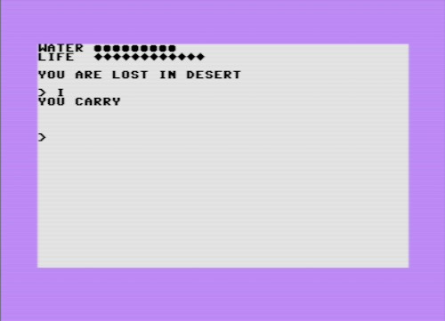

|
Desert
Game available in Itch.io. Soruce code in Github. |
If you read the guide of Pursuing Tom Ram you know what you have to do to run Desert in a C-64. You have to change the calls to BASIC Rom subroutines and change the initial memory address and the loader. Take a look at the changes.
*=$0801
BYTE $0B, $08, $0A, $00, $9E, $32, $30, $36, $31, $00
BYTE $00, $00
; Subroutines
PRTSTR = $AB1E
CHROUT = $ffd2
CHIN = $FFCF
CLRS = $E544 ; CLR Screen
PRTFIX = $BDCD ; Convert and pritns and integer
With these changes, the game runs equals to the VIC-20 version (including using 22 characters per line only). Feel free to try new things. There is a LOT of ideas you can add with your C-64.
RAM address starts at same position than VIC-20, so no changes in the loader.
The new addresses of the subroutines are the same than Pursuing Tom Ram, but I a problem.
*=$1001
BYTE $0B, $10, $0A, $00, $9E, $34, $31, $30, $39, $00
BYTE $00, $00
; Subrutines
PRTSTR = $9088
CHROUT = $ffd2 ; The same in all C machines
CHIN = $FFCF ; The same in all C machines
CLRS = $c567 ; CLR Screen
In Desert, I use the subroutine PRTFIX to convert an integer to chars and print them on screens. I did not find that subroutine in the ROM of the Commodore 16. Maybe the subroutine is there but there is no information in the books I found on Internet.
I tried a different approach. Instead of printing number, I show a status bar made of characters.
This is the code of the new print routines with the changes.
CHAR_WATER = $71
CHAR_LIFE = $7A
;-----------------------------
PrintStats
jsr PrintWater
jsr PrintLife
jsr CR
rts
PrintWater
lda #str_water
jsr PRTSTR
lda #CHAR_WATER
ldx water
beq Print_Exit
jsr PrintChars
jmp Print_Exit
PrintLife
lda #str_life
jsr PRTSTR
lda #CHAR_LIFE
ldx life
beq Print_Exit
jsr PrintChars
Print_Exit
jsr CR
rts
PrintChars
jsr CHROUT
dex
bne PrintChars
rts
Here you have the new interface:
